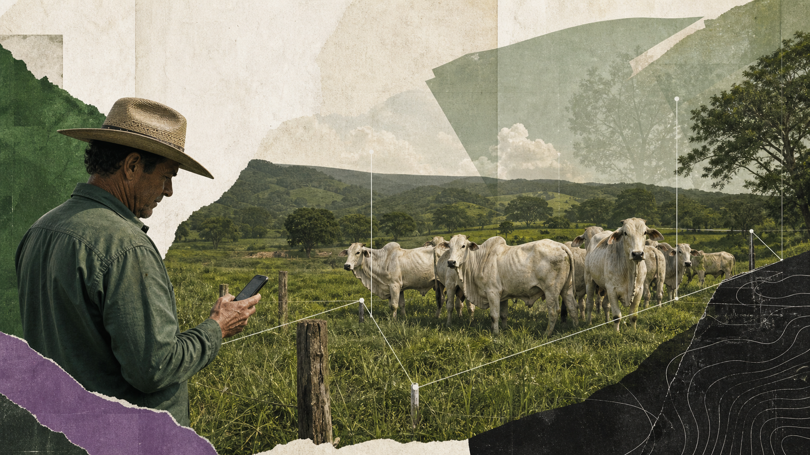

01 / SISTEMA GOVERNAMENTAL
SIDAGRO / IMA
Product Design · UX Research · Design System
Sistema de defesa agropecuária com fluxos e regras de negócio de alta complexidade.
45+ componentes do design system · avaliação heurística em duas versões do sistema
Explorar case SIDAGRO / IMA ↗